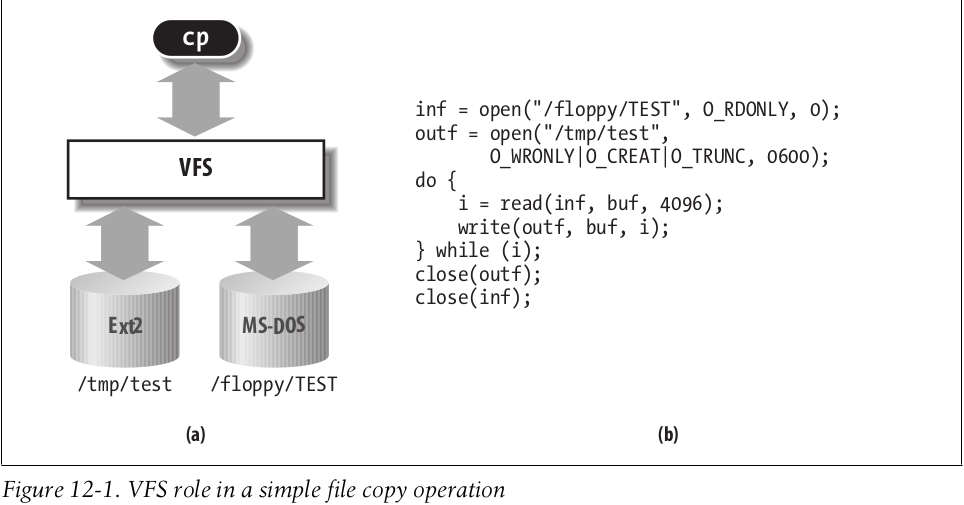
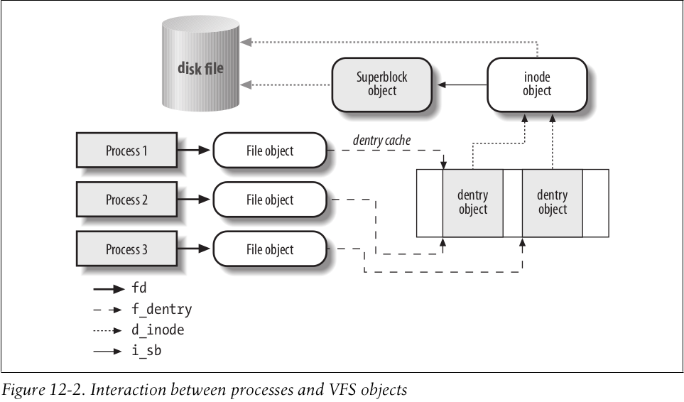
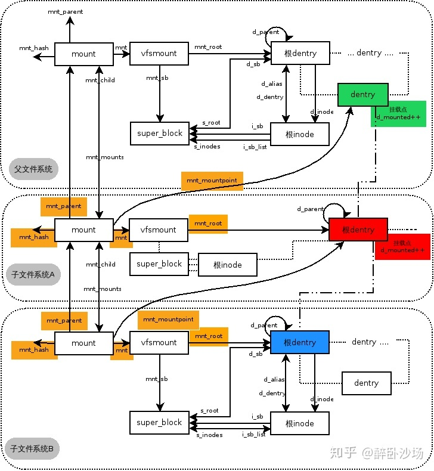

linux内核学习-四
前言
这篇博客讲解一下Linux的虚拟文件系统机制，其包含的内容和细节十分之多
虚拟文件系统
Linux内核通过虚拟文件系统(Virtual Filesystem Switch)，从而可以健壮的为各种不同的文件系统提供一个通用的接口

具体的，VFS将文件系统划分为三种类型
- 磁盘文件系统
这些文件系统管理在本地磁盘分区中的可用存储空间，或其他可以起到磁盘作用的设备。例如Linux的第二拓展文件系统(Ext2)或微软的VFAT文件系统 - 网络文件系统
这些文件系统允许轻易地访问属于其他网络计算机的文件系统所包含的文件。例如微软的CIFS文件系统 - 特殊文件系统
这些文件系统不参与管理本地或远程的磁盘空间。例如/proc文件系统
通用文件模型
VFS引入通用文件模型(common file model)，用以抽象其支持的所有文件系统。通用文件模型采用面向对象的思想，定义了对象的数据结构，和其上的操作方法。通用文件类型使用类似C++的虚表方法进行实现。
通用文件类型由下列四个对象类型组成
- 超级块对象(superblock object)
- 索引节点对象(inode object)
- 文件对象(file object)
- 目标项对象(dentry object)

struct super_block
Linux内核通过位于include/linux/fs.h的结构体，来管理超级块对象。其相关的重要字段如下所示
| 类型 | 字段名称 | 描述 |
|---|---|---|
| struct list_head | s_list | 指向超级块链表 |
| dev_t | s_dev | 设备标识符 |
| unsigned long | s_blocksize | 以字节为单位的块大小 |
| loff_t | s_maxbytes | 文件的最大长度 |
| const struct file_system_type * | s_type | 文件系统类型 |
| const struct super_operations * | s_op | 该超级块的方法 |
| const struct dquot_operations * | dq_op | 磁盘限额处理方法 |
| const struct quotactl_ops * | s_qcop | 磁盘限额管理方法 |
| const struct export_operations | s_export_op | 网络文件系统使用的输出方法 |
| unsigned long | s_flags | 安装标志 |
| unsigned long | s_magic | 文件系统的魔数 |
| struct dentry * | s_root | 文件系统根目录的目录项对象 |
| struct rw_semaphore | s_umount | 卸载所用的信号量 |
| int | s_count | 引用计数器 |
| atomic_t | s_active | 次级引用计数器 |
| void * | s_security | 指向超级块安全数据结构的指针 |
| const struct xattr_handler ** | s_xattr | 指向超级块属性结构的指针 |
| struct block_device * | s_bdev | 指向块设备驱动程序描述符的指针 |
| struct hlist_node | s_instances | 用于给定文件系统类型的超级块对象链表的指针 |
| void * | s_fs_info | 指向特定文件系统的超级块信息的指针 |
| char[32] | s_id | 包含超级块的块设备名称 |
| __u32 | s_time_gran | 时间戳的粒度 |
| struct list_head | s_inodes | 该文件对应的 |
其中，其s_op字段就是超级块的虚表，描述超级块对象所支持的相关操作，该字段结构体定义于include/linux/fs.h
总的来说，超级块对象记录一个mount的文件系统的描述信息(如文件系统类型、文件系统包含的inode等)
struct inode
Linux内核通过位于include/linux/fs.h的结构体，来管理索引节点对象。其相关的重要字段如下所示
| 类型 | 字段名称 | 描述 |
|---|---|---|
| umode_t | i_mode | 文件类型与访问权限 |
| uid_t | i_uid | 所有者标识符 |
| gid_t | i_gid | 组标识符 |
| unsigned int | i_flags | 文件系统的安装标志 |
| const struct inode_operations * | i_op | 索引节点的操作 |
| struct super_block * | i_sb | 指向超级块对象的指针 |
| struct address_space * | i_mapping | 指向address space对象的指针 |
| unsigned long | i_ino | 索引节点号 |
| unsigned int | i_nlink | 硬链接数目 |
| dev_t | i_rdev | 实设备标识符 |
| loff_t | i_size | 文件的字节数 |
| struct timespec64 | i_atime | 上次访问文件的时间 |
| struct timespec64 | i_mtime | 上次写文件的时间 |
| struct timespec64 | i_ctime | 上次修改索引节点的时间 |
| blkcnt_t | i_blocks | 文件的块数 |
| unsigned long | i_state | 索引节点的状态标志 |
| unsigned long | dirtied_when | 索引节点的弄脏时间 |
| struct list_head | i_sb_list | 用于超级块的索引节点链表的指针 |
| struct list_head | i_dentry | 引用索引节点的目录项对象链表的头 |
| atomic_t | i_count | 引用计数器 |
| const struct file_operations * | i_fop | 缺省文件操作 |
| struct address_space | i_data | 文件的address_space对象 |
| struct list_head | i_devices | 用于具体的字符或块设备索引节点链表的指针 |
| struct pipe_inode_info * | i_pipe | 如果文件是一个管道，则使用该字段 |
| __u32 | i_generation | 索引节点版本号 |
其中，其i_op字段就是索引节点的虚表，描述索引节点所支持的相关操作，该字段结构体定义于include/linux/fs.h
总的来说，索引节点对象记录一个文件(目录)所需的描述数据(如文件的块数、文件最后一个块的字节数)
struct file
Linux内核通过位于include/linux/fs.h的结构体，来管理打开文件对象。其相关的重要字段如下所示
| 类型 | 字段名称 | 描述 |
|---|---|---|
| struct path | f_path | 与文件相关的文件安装系统、目录项信息 |
| const struct file_operations* | f_op | 文件操作表的指针 |
| atomic_long_t | f_count | 文件对象的引用计数器 |
| unsigned int | f_flags | 打开文件时所指定的标志信息 |
| fmode_t | f_mode | 进程对打开文件的访问模式 |
| loff_t | f_pos | 当前的文件偏移量 |
| struct fown_struct | f_owner | 通过信号进行I/O事件通知的数据 |
| const struct cred* | f_cred | 打开文件所有者的相关信息 |
| void * | private_data | 指向特定文件系统或设备驱动程序所需的数据 |
| struct address_space * | f_mapping | 指向文件地址空间对象 |
其中，其f_op字段就是打开文件的虚表，描述打开文件所支持的相关操作，该字段结构体定义于include/linux/fs.h
总的来说，打开文件对象记录进程打开文件(目录)的方式(如进程访问对象的权限、进程访问对象的模式)
struct dentry
Linux内核通过位于include/linux/dcache.h的结构体，来管理目录项对象。其相关的重要字段如下所示
| 类型 | 字段名称 | 描述 |
|---|---|---|
| unsigned int | d_flags | 目录项高速缓存标志 |
| struct hlist_bl_node | d_hash | 指向散列表表项链表的指针 |
| struct dentry * | d_parent | 父目录的目录项对象 |
| struct qstr | d_name | 文件名称 |
| struct inode * | d_inode | 与文件名关联的索引节点对象 |
| unsigned char[] | d_iname | 短文件名称 |
| const struct dentry_operations * | d_op | 目录项方法 |
| struct super_block * | d_sb | 文件的超级块对象 |
| unsigned long | d_time | 由d_revalidate方法使用 |
| void * | d_fsdata | 依赖于文件系统的数据 |
| struct list_head | d_lru | 用于未使用目录项链表的指针 |
| struct list_head | d_child | 对目录而言，用于同一父目录中的目录项链表的指针 |
| struct list_head | d_subdirs | 对目录而言，其子目录链表的头 |
| struct hlist_node | d_alias | 用于与同一索引节点(别名)相关的目录项链表的指针 |
| struct rcu_head | d_rcu | 回收目录项对象时，由RCU描述符使用 |
其中，其d_op字段就是目录项的虚表，描述目录项所支持的相关操作，该字段结构体定义于include/linux/dcache.h
总的来说，目录项对象表示逻辑意义上的目录的对象，每一个目录项，有且仅有一个索引节点对象与其对应。更直白的说法，就是目录项对象表示目录中的对象(子文件和子目录)
与进程相关的文件
struct fs_struct
每个进程都有其自己的当前工作目录、其自己的根目录。Linux内核通过位于include/linux/fs_struct.h的结构体，来管理进程所必需的文件信息。其重要字段如下所示
| 类型 | 字段名称 | 描述 |
|---|---|---|
| int | users | 共享该表的进程个数 |
| spinlock_t | lock | 表中字段的自旋锁 |
| int | umask | 当打开文件时，设置文件权限时所使用的位掩码 |
| struct path | root | 根目录的目录项对象 |
| struct path | pwd | 当前工作目录的目录项 |
struct files_struct
每个进程同样有自己的打开文件。Linux内核通过位于include/linux/fdtable.h的结构体，来管理进程所必需的文件信息。其重要字段如下所示
| 类型 | 字段名称 | 描述 |
|---|---|---|
| atomic_t | count | 共享该表的进程数目 |
| struct fdtable __rcu * | fdt | 指向文件对象数组的指针 |
| unsigned int | next_fd | 所分配的最大文件描述符 + 1 |
| unsigned long[1] | close_on_exec_init | 执行exec()时，需要关闭的文件描述符的初始集合 |
| unsigned long[1] | open_dfs_init | 文件描述符的初始集合 |
| struct file __rcu *[] | fd_array | 文件对象指针的初始化数组 |
文件系统处理
为了更直观的了解整个文件系统的工作原理，这里借用知乎醉卧沙场的示意图，展示文件处理的整体框架

struct file_system_type
文件系统的代码要么包含在内核映象中，要么作为模块被动态载入
Linux内核通过位于include/linux/fs.h的结构体，来管理Linux中注册的文件系统类型。其重要字段如下所示
| 类型 | 字段名称 | 描述 |
|---|---|---|
| const char * | name | 文件系统名称 |
| int | fs_flags | 文件系统类型标志 |
| int ()(struct fs_context) | init_fs_context | 初始化超级块的相关方法 |
| void ()(struct super_block ) | kill_sb | 删除超级块 |
| struct module * | owner | 指向实现文件系统的模块的指针 |
| struct file_system_type * | next | 指向文件系统类型链表中下一个元素的指针 |
| struct hlist_head | fs_supers | 具有相同文件系统类型的超级块对象链表的头 |
Linux调用register_filesystem(struct file_system_type *fs)，注册实现的文件系统类型；当不需要时，再调用unregister_filesystem(struct file_system_type *fs)注释文件系统类型
文件系统安装
整体框架
Linux使用根文件系统(root filesystem)：其由内核在引导阶段直接安装，包含系统初始化脚本，以及最基本的系统程序等数据
其他文件系统，要么通过初始化脚本安装；要么由用户直接安装在已安装文件系统的目录上。
也就是，作为一个目录树，每个文件系统都拥有自己的根目录(root directory)。安装文件系统的这个目录称之为安装点(mount point)
struct vfsmount
Linux内核通过位于include/linux/mount.h的结构体，来管理Linux中文件系统的安装信息。其重要字段如下所示
| 类型 | 字段名称 | 描述 |
|---|---|---|
| struct dentry * | mnt_root | 指向该文件系统根目录的dentry |
| struct super_block * | mnt_sb | 指向该文件系统的超级块对象 |
| int | mnt_flags | 该文件系统相关的标志信息 |
这里需要特别说明的是:
在Linux中，同一个文件系统，可被安装多次
但是无论安装几次，其文件系统永远是唯一的，即有且仅有一个超级块对象
安装普通文件系统
即某一个文件系统将被安装在一个已安装文件系统之上
Linux内核通过位于fs/namespace.c的long do_mount(const char *dev_name, const char __user *dir_name, const char *type_page, unsigned long flags, void *data_page)函数，安装一个普通文件系统
下面给出简化很多细节的逻辑1
2
3
4
5
6
7
8
9
10
11
12
13
14
15
16
17
18
19
20
21
22
23
24
25
26
27
28
29
30
31
32
33
34
35
36
37
38
39long do_mount(const char *dev_name, const char __user *dir_name,
const char *type_page, unsigned long flags, void *data_page)
{
struct path path;
ret = user_path_at(AT_FDCWD, dir_name, LOOKUP_FOLLOW, &path);
ret = path_mount(dev_name, &path, type_page, flags, data_page);
path_put(&path);
return ret;
}
int path_mount(const char *dev_name, struct path *path,
const char *type_page, unsigned long flags, void *data_page)
{
return do_new_mount(path, type_page, sb_flags, mnt_flags, dev_name,
data_page);
}
static int do_new_mount(struct path *path, const char *fstype, int sb_flags,
int mnt_flags, const char *name, void *data)
{
struct file_system_type *type;
struct fs_context *fc;
type = get_fs_type(fstype);
struct fs_context *fc = fs_context_for_mount(type, sb_flags);
err = do_new_mount_fc(fc, path, mnt_flags);
}
static int do_new_mount_fc(struct fs_context *fc, struct path *mountpoint,
unsigned int mnt_flags)
{
mnt = vfs_create_mount(fc);
error = do_add_mount(real_mount(mnt), mp, mountpoint, mnt_flags);
}
其基本思路就是根据指定文件系统中的操作函数指针，从而获取该文件系统对应的超级块对象，并为该文件系统的安装，分配struct vfsmount结构进行管理。
安装根文件系统
Linux安装根文件系统可分为两部分
- 内核安装特殊rootfs文件系统——该文件系统仅提供一个作为初始安装点的空目录
- 内核在空目录上安装实际根文件系统
之所以麻烦的先安装rootfs文件系统，然后再安装实际根文件系统，是因为rootfs文件系统允许内核容易地更改其实际文件系统
init_mount_tree
Linux内核通过位于fs/namespace.c的static void __init init_mount_tree(void)函数，来安装rootfs文件系统
下面给出简化很多细节的逻辑1
2
3
4
5
6
7
8
9
10
11
12
13
14
15
16static void __init init_mount_tree(void)
{
struct vfsmount *mnt;
struct mount *m;
struct mnt_namespace *ns;
struct path root;
mnt = vfs_kern_mount(&rootfs_fs_type, 0, "rootfs", NULL);
ns = alloc_mnt_ns(&init_user_ns, false);
root.mnt = mnt;
root.dentry = mnt->mnt_root;
set_fs_pwd(current->fs, &root);
set_fs_root(current->fs, &root);
}
其基本思路就是首先注册特殊文件类型rootfs，然后初始化进程0(当前进程)的根目录和当前工作目录
prepare_namespace
Linux内核通过位于init/do_mounts.c的void __init prepare_namespace(void)函数，来安装实际的根文件系统
下面给出简化很多细节的逻辑1
2
3
4
5
6
7
8
9
10
11
12
13
14
15
16
17
18
19
20
21
22
23
24void __init prepare_namespace(void)
{
if (saved_root_name[0]) {
root_device_name = saved_root_name;
if (!strncmp(root_device_name, "mtd", 3) ||
!strncmp(root_device_name, "ubi", 3)) {
mount_block_root(root_device_name, root_mountflags);
goto out;
}
ROOT_DEV = name_to_dev_t(root_device_name);
if (strncmp(root_device_name, "/dev/", 5) == 0)
root_device_name += 5;
}
if (initrd_load())
goto out;
mount_root();
out:
devtmpfs_mount();
init_mount(".", "/", NULL, MS_MOVE, NULL);
init_chroot(".");
}
其基本思路就是根据内核启动参数的root字段，初始化实际的根文件系统并安装，最后更改根路径即可
文件系统卸载
Linux内核通过位于fs/namespace.c的static int ksys_umount(char __user *name, int flags)函数，来卸载安装的文件系统
下面给出简化很多细节的逻辑1
2
3
4
5
6
7
8
9
10
11
12
13
14
15
16
17
18
19
20
21
22
23
24
25
26
27static int ksys_umount(char __user *name, int flags)
{
int ret;
user_path_at(AT_FDCWD, name, lookup_flags, &path);
}
int path_umount(struct path *path, int flags)
{
struct mount *mnt = real_mount(path->mnt);
ret = do_umount(mnt, flags);
return ret;
}
static int do_umount(struct mount *mnt, int flags)
{
struct super_block *sb = mnt->mnt.mnt_sb;
if (&mnt->mnt == current->fs->root.mnt && !(flags & MNT_DETACH)) {
/*
* Special case for "unmounting" root ...
* we just try to remount it readonly.
*/
return do_umount_root(sb);
}
umount_tree(mnt, ...);
}
基本思路就是查找到相关的dentry，进而获取mount相关结构体，读取到对应的超级块对象。有了这些结构后，则可以方便的卸载文件系统，即释放相关的mount相关结构体